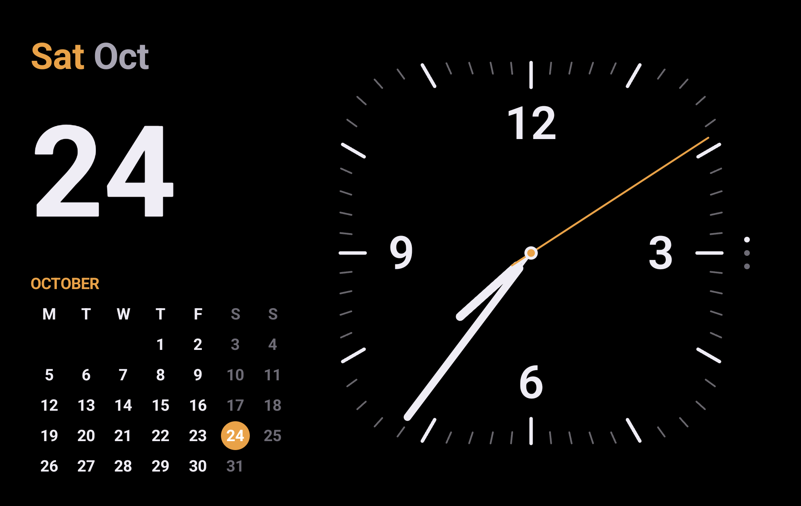
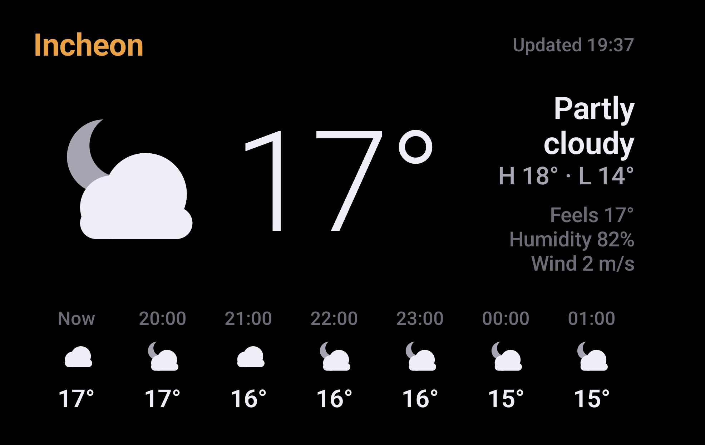
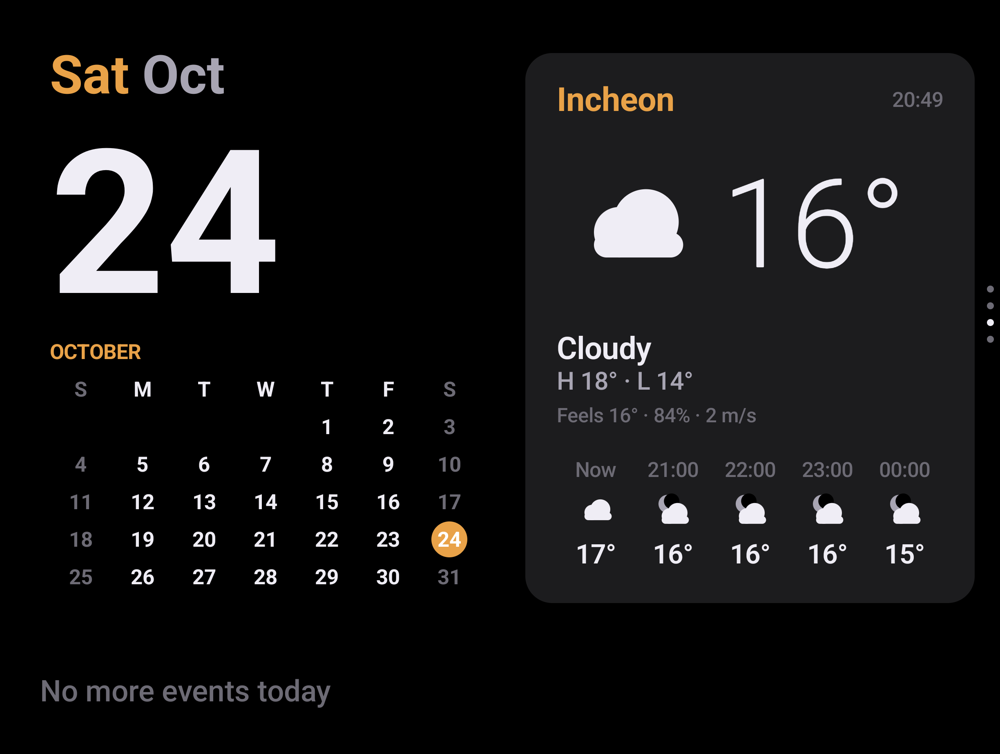
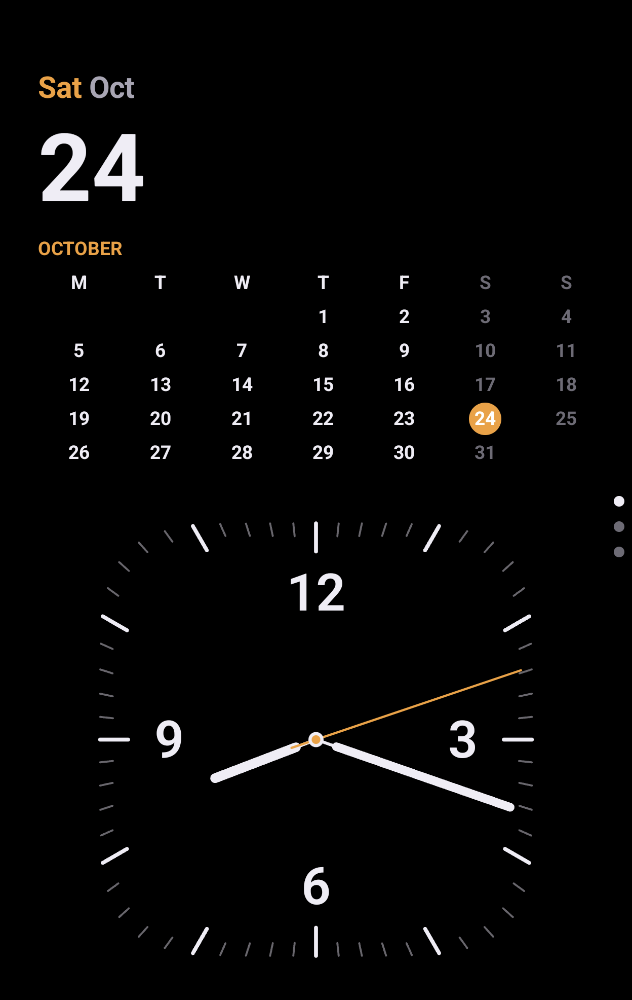
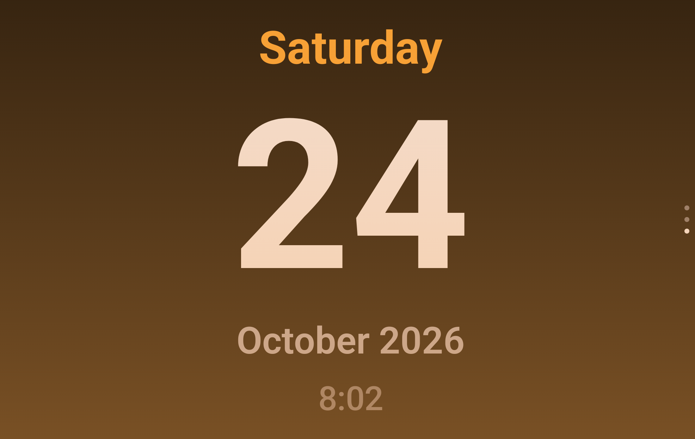
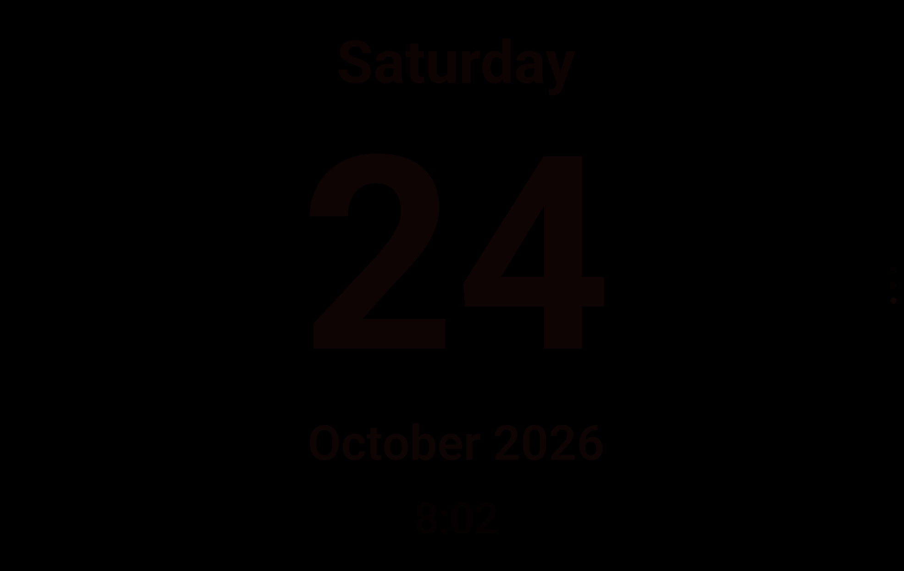

아이폰 스탠바이처럼 폴드8을 가로로 세워 충전하면 시계·달력·날씨·음악 화면이 켜지는 앱을 만든다. 기본 화면은 아이폰 듀오 스탠바이와 같은 “왼쪽 달력 + 오른쪽 정사각 둥근 시계”다.
폴드8(SM-F971N, Android 17)에서 찍은 실제 앱 화면이다. 시계는 사용자가 보낸 아이폰 듀오 스탠바이 사진(Fri Oct 23)에 맞췄고, 날씨는 Open-Meteo에서 받은 실제 현재 위치 날씨다. 펼친 화면의 사진 카드는 개인 사진이라 여기에는 싣지 않았다.






| 기능 | 지금 모습 | 확인 |
|---|---|---|
| 달력 + 아날로그 시계 | 아이폰 듀오 사진대로. 주황 요일 + 회색 월, 큰 날짜, 월요일 시작 달력(토·일 회색, 오늘 주황 원), 가로·세로가 같은 정사각 슈퍼타원 시계판, 주황 초침. | 실기기 확인 |
| 커버 화면 세로 | 날짜 영역이 낮고 넓어서 큰 날짜를 줄이고 달력 칸을 높였다. 달력 숫자 약 10dp → 약 14dp(가로 화면 14.5dp와 비슷). | 실기기 확인 |
| 시계 스타일 3개 | 달력+아날로그 · 큰 디지털 · 날짜만 크게. 커버 화면에서 위아래로 넘기고, 오른쪽 끝 세로 점 3개가 현재 스타일을 표시. | 아날로그 실기기 나머지 2개 재확인 |
| 날씨 | 커버 화면에서는 화면 전체, 펼친 화면 스택에서는 세로 칸용 배치. 지역 · 시각 · 하늘 그림(밤엔 달) · 큰 기온 · 상태 · 최고/최저 · 체감 · 습도 · 바람 · 시간별 예보. | 실기기 확인 |
| 펼친 화면 50:50 | 펼친 안쪽 화면(가로)에서 왼쪽 날짜·달력과 오른쪽 영역을 반씩. 책처럼 살짝 접으면 접힘선 양쪽이 한 면씩. | 실기기 확인 |
| 펼친 화면 오른쪽 스택 | 오른쪽 반을 위아래로 밀면 사진 → 시계 → 날씨 → 재생 중. 오른쪽 끝 점, 마지막 카드 기억, 음악을 틀면 재생 중 카드로. | 실기기 확인 재생 중 자동 전환 |
| 사진 카드 | 설정에서 고른 갤러리 앨범을 섞어 30초마다 바꿔 보여주고, 왼쪽 아래에 시각. 밤엔 어둡게. 앨범이 없으면 카드가 빠진다. | 실기기 확인 |
| 전면 카메라 피하기 | 안쪽 화면 카메라는 화면 아래 카메라라서 시스템이 알려주지 않는다. 기기에서 읽은 위치(x 1823–1901, y 18–96px)를 코드에 넣고, 겹치는 카드는 카메라 아래 12dp로 내린다. 사진 윗변 62px → 130px. | 실기기 실측 |
| 알람 전 은은한 빛 | 다음 알람 15분 전부터 화면이 호박색으로 천천히 밝아지고 밝기도 올라간다. 울리는 동안 최대로 유지하고, 알람을 끄면 원래대로. | 에뮬레이터 확인 삼성 시계 알람 |
| 움직이면 깨우기 | 밤에 1분 동안 움직임도 터치도 없으면 화면을 거의 끄고, 폰이 흔들리거나 화면을 만지면 다시 켠다. 깨우는 터치는 넘김으로 전달하지 않는다. | 에뮬레이터 확인 |
| 재생 중 음악 · 알림 배너 | 앨범 아트·곡 정보·컨트롤, 새 알림 6초 배너(잠겨 있으면 앱 이름만). 알림 접근을 켰다. | 음악 재생으로 확인 |
| 야간 모드 | 어두우면 전부 어두운 빨강, 밝기 최저, 초침 숨김. | 실기기 확인 |
| 충전 중 화면 보호기 | 설정 › 디스플레이 › 화면 보호기에서 Fold StandBy를 고르고 “충전 중”으로. | 폰 설정 후 확인 |
| 설정 앱 | 화면 보호기 바로가기, 권한 안내, 언어 · 주 시작 · 강조색 · 야간 모드, 펼친 화면 스택(사진 카드, 앨범 고르기), 침대 옆 시계(알람 전 빛, 움직이면 깨우기). | 실기기 확인 |
아이폰 듀오(2026년 10월 출시) 스탠바이를 애플 발표, 리뷰, 코드 유출 기사로 조사했고, 사용자 결정에 따라 범위를 줄였다. 기준 화면은 사용자가 보낸 아이폰 듀오 사진이다.
| 아이폰 듀오 스탠바이 | 결정 | 내용 |
|---|---|---|
| 클래식 캘린더 + 아날로그 얼굴 | 반영함 | 주황 강조, 월요일 시작, 주말 회색, 정사각 시계판, 오른쪽 세로 페이지 점. |
| 날씨 얼굴 | 반영함 | 커버 화면은 화면 전체, 펼친 화면은 스택 카드. |
| 디지털 얼굴 | 있음 | 1차에서 만든 큰 디지털 시계. |
| 위젯 스택(위아래로 넘기기) | 반영함 | 펼친 화면 오른쪽 반에서 사진 · 시계 · 날씨 · 재생 중. 펼친 화면 4칸 대시보드 대신. |
| 사진 · 공유 앨범 | 반영함 | 고른 갤러리 앨범을 사진 카드로. |
| 침대 옆 시계, 알람 전 은은한 빛 | 반영함 | 알람 15분 전부터 호박색으로 밝히고 울리는 동안 유지. |
| 움직이면 깨우기 | 반영함 | 밤에 가만히 두면 거의 끄고 움직이면 켠다. |
| 얼굴 편집기, 색 테마: 길게 눌러 스타일·색·글꼴 변경 | 남은 후보 | 지금은 설정 앱에서 강조색만 고른다. |
| 추억(몇 년 전 오늘) | 남은 후보 | 사진 카드에 몇 년 전 오늘 찍은 사진을 섞는다. |
| Flow(움직이는 그림, 유출) | 남은 후보 | 흐르는 그라디언트 위에 시계. 번인에 유리. |
| 텐트 자세에서 충전 없이 켜짐 | 제외 | 사용자 결정. 폴드8에 TENT 상태·힌지 센서가 있다는 것만 확인해 두었다. |
| 실시간 현황 · 점수 카드 | 제외 | 사진 속 점수 카드는 예시였다(사용자 확인). |
| Home Camera · Home Modular(스마트홈) | 제외 | 사용자 결정. |
| 세계 시계 | 제외 | 모양이 좋지 않아 뺐다. 다시 넣으면 새로 디자인한다. |
| 일정·배터리·알람 위젯 | 제외 | 일정은 펼침·반접기의 아래 띠에만 남았다. |
| Snoopy · Fade(유출) | 제외 | Snoopy는 캐릭터 저작권, Fade는 공개된 정보가 없다. |
사진 속 아이폰 듀오는 화면이 바깥으로 접히는 구조라 텐트처럼 세워도 화면이 보인다. 폴드8은 안으로 접히므로 텐트 자세에서는 메인 화면이 안쪽에 갇힌다. 그래서 아래 세 가지 자세를 지원하고, 기본값은 커버 화면으로 둔다. 미리보기의 화면 비율은 아래 해상도 그대로다.
| 자세 | 화면 (가로 기준) | 레이아웃 | 평가 |
|---|---|---|---|
| 접고 커버 화면을 가로로 충전 거치대나 작은 스탠드에 옆으로 세움 | 5.5″ · 1972×1248 약 1.58:1 | 사진과 같은 좌우 분할. 왼쪽 40% 달력, 오른쪽 60% 시계 | 기본값 |
| 펼쳐서 가로로 태블릿처럼 스탠드에 세움 | 7.6″ · 2448×1848 4:3 | 위쪽에 현재 보기, 아래 띠에 오늘 일정 2–3개 | 지원 |
| 반접기 세로로 돌린 뒤 L자로 접어 세움 | 윗면 1848×1224 약 1.5:1 | 윗면에 현재 보기, 아랫면은 다음 일정 | 1차에 구현 |
| 텐트 자세 | — | 메인 화면이 안쪽을 향해 쓸 수 없음 | 불가 |
해상도는 출시 후 통신사·판매처 사양표 기준이다. 메인 화면 가로 해상도는 1848과 1828로 출처가 갈리므로 실기기에서 창 크기를 찍어 최종 확인한다.
스탠바이에서 많이 쓰는 기능을 골라 폴드8에서 구현할 방법을 정했다. 아이폰처럼 좌우로 밀면 보기가 바뀌고, 위아래로 밀면 같은 보기 안에서 스타일·위젯이 바뀐다. 미리보기 화면도 좌우로 끌어서 넘겨 볼 수 있다.
| 스탠바이 기능 | 폴드8에서 구현 방법 | 필요한 권한 | 단계 |
|---|---|---|---|
| 3개 보기 + 스와이프 시계 · 날씨 · 재생 중 | Compose HorizontalPager로 보기 전환, 각 보기 안에 VerticalPager로 스타일 전환. 마지막으로 본 화면 기억. | 없음 | 1차 |
| 시계 스타일 아날로그 · 디지털 · 큰 날짜 | 아이폰 듀오 사진의 달력+정사각 아날로그를 기본으로, 큰 디지털 숫자, 날짜만 크게. 강조색 선택(기본 주황). 세계 시계는 뺐다. | 없음 | 1차 |
| 날씨 (위젯 대신) 화면 전체 | 처음엔 위젯 묶음 2개(일정·날씨·배터리·알람)였으나, 날씨 하나가 화면을 꽉 채우는 보기로 바꿨다. 시간별 예보 7칸 포함. 일정은 펼침·반접기 아래 띠에 남았다. | 대략적 위치, 캘린더 읽기(아래 띠) | 1차 |
| 재생 중 음악 전체화면 앨범 아트 + 컨트롤 | 알림 접근 권한으로 현재 미디어 세션을 읽어 곡 정보·앨범 아트·재생/다음/이전을 표시. 유튜브 뮤직·스포티파이·멜론 등 대부분 동작. | 알림 접근 | 1차 |
| 알림 표시 새 알림이 크게 떴다가 사라짐 | 같은 알림 접근 권한으로 새 알림을 앱 아이콘 + 제목만 크게 띄우고 5초 뒤 축소. 잠금 중엔 내용 숨김. | 알림 접근 | 1차 |
| 야간 모드 어두우면 빨간 화면 | 조도 센서가 어두우면 모든 요소를 어두운 빨강으로, 밝기 최소. 시간대 지정도 가능. | 없음 | 1차 |
| 사진 추천 사진 슬라이드 | 사진 선택기로 고른 앨범·사진을 천천히 넘기며 표시. 위에 시계 작게 겹침. | 선택한 사진만 접근 | 2차 |
| 실시간 현황(Live Activities) 타이머 · 배달 · 스포츠 점수 | 하지 않기로 했다. | — | 제외 |
| 충전기별 화면 기억 맥세이프마다 다른 보기 | 폰은 충전기를 구분하지 못한다. 대신 유선/무선 충전을 구분해 각각 마지막 보기를 기억한다(예: 침대 옆 무선 = 야간 시계, 책상 유선 = 위젯). | 없음 | 2차 |
| 다른 앱 위젯 넣기 | 위젯을 날씨 하나로 줄여서 하지 않는다. | — | 제외 |
| 전화 수신 · 음성 비서 | 전화가 오면 시스템이 화면 보호기 위로 통화 화면을 띄운다. 빅스비·제미나이 호출도 시스템 몫이라 앱에서 만들 것이 없다. | — | 시스템 처리 |
안드로이드 10부터 백그라운드에 있는 앱은 마음대로 화면을 띄울 수 없다. 회전 센서를 계속 감시하다가 앱을 여는 방식은 막히거나, 막히지 않더라도 배터리를 상시 잡아먹는다. 그래서 시스템이 이미 제공하는 진입점을 쓴다.
| 방법 | 동작 | 장단점 | 채택 |
|---|---|---|---|
| A. 화면 보호기 (DreamService) | 설정 › 디스플레이 › 화면 보호기에서 이 앱을 고르고 “충전 중”으로 지정. 충전 중 화면이 꺼질 시간이 되면 시스템이 자동으로 띄운다. | 권한이 필요 없고 배터리 부담 0. 스탠바이와 동작이 가장 비슷하다. 단, 회전 여부는 조건이 아니므로 세로일 땐 세로 레이아웃을 보여준다. | 핵심 |
| B. 앱 직접 실행 (Activity) | 홈 아이콘이나 바로가기로 열면 전체화면 + 화면 켜짐 유지. 가로로 돌리면 레이아웃이 바로 바뀐다. | 충전기 없이도 쓸 수 있다. 실행은 손으로 해야 한다. | 핵심 |
| C. 모드 및 루틴 (삼성) | “충전 시작” 같은 조건이 되면 “앱 열기”를 실행하는 루틴을 만든다. | 코딩 없이 자동 실행 조건을 세밀하게 걸 수 있다. 쓸 수 있는 조건(회전·거치 등)은 폴드8의 One UI 버전에서 확인해야 한다. | 보조 |
| D. 상시 서비스 + 다른 앱 위에 표시 권한 | 포그라운드 서비스가 센서를 감시하다 가로+충전이면 Activity를 띄운다. | 회전만으로 켜지게 할 수 있지만 상단 알림이 늘 떠 있고 배터리를 쓴다. 삼성 배터리 최적화가 서비스를 죽이는 일도 잦다. | 비추천 |
A와 B는 같은 Compose 화면 코드를 공유한다. 화면 하나를 만들어 두 곳에 꽂는 구조다.
실제로 만든 파일 구성이다. 패키지는 com.marksnd.foldstandby, 최소 Android 12(API 31), 대상 API 37.
~/Projects/fold-standby/
├─ README.md 설치·처음 설정·구조 설명
├─ docs/ 계획 페이지(plan.html ~ plan-v5.html), 실기기·에뮬레이터 화면
└─ app/src/main/
├─ AndroidManifest.xml 설정 · StandBy 아이콘 2개, 화면 보호기, 알림 리스너
├─ res/xml/dream_info.xml 화면 보호기 설정 버튼 → 설정 화면
└─ java/com/marksnd/foldstandby/
├─ MainActivity.kt 설정·권한 안내, 언어·강조색·야간 모드
├─ StandbyActivity.kt 전체화면, 충전 중 화면 켜짐, 반접기 감지
├─ StandbyDream.kt 화면 보호기 (Lifecycle·SavedState 직접 제공)
├─ service/NotifListener.kt 새 알림 전달, 미디어 세션 권한, 울리는 알람 감지
├─ data/Settings.kt SharedPreferences 설정
├─ data/Time.kt 시각(매 프레임/매초), 오늘 날짜, 번인 이동
├─ data/Calendar.kt 오늘 일정, 캘린더 변경 감지
├─ data/Weather.kt Open-Meteo, 위치 없으면 서울
├─ data/Device.kt 배터리·충전 방식, 다음 알람, 조도 센서
├─ data/Media.kt 재생 중 세션 추적과 컨트롤
├─ data/Bedside.kt 알람 전 빛의 세기, 움직임 감지(가속도 센서)
├─ data/Photos.kt 앨범 목록, 앨범 사진, 화면 크기에 맞춰 읽기
└─ ui/
├─ StandbyScreen.kt 보기 전환(페이저), 야간·번인, 화면 비율별 배치
├─ SquircleClock.kt 둥근 사각 아날로그 시계 (Canvas)
├─ ClockFaces.kt 달력 패널(월/일 시작), 디지털 · 큰 날짜
├─ Widgets.kt 날씨 전체 화면, 하늘 그림(해·달·구름·비·눈), 아래 일정 띠
├─ NowPlayingPage.kt 재생 중 보기
├─ UnfoldedFace.kt 펼친 화면: 왼쪽 달력 + 오른쪽 위젯 스택
├─ PhotoFrame.kt 사진 카드(30초마다 바뀜, 시각 표시)
├─ Camera.kt 안쪽 화면 전면 카메라 위치와 피하기
├─ NotificationBanner.kt 새 알림 배너
└─ Common.kt 색 팔레트(주간·야간), 글자 크기, 좌우/위아래 분할<service
android:name=".StandbyDream"
android:exported="true"
android:label="Fold StandBy"
android:permission="android.permission.BIND_DREAM_SERVICE">
<intent-filter>
<action android:name="android.service.dreams.DreamService" />
<category android:name="android.intent.category.DEFAULT" />
</intent-filter>
<meta-data android:name="android.service.dream"
android:resource="@xml/dream_info" />
</service>DreamService는 Activity가 아니어서 Compose를 바로 붙일 수 없다. LifecycleOwner와 SavedStateRegistryOwner를 직접 구현해 ComposeView에 연결하는 작은 어댑터가 필요하다(알려진 패턴, 반나절 작업). 화면 보호기는 기본적으로 터치하면 꺼지므로 isInteractive = true로 스와이프와 음악 컨트롤을 받는다.
val msm = getSystemService(MediaSessionManager::class.java)
val sessions = msm.getActiveSessions(
ComponentName(this, NotifListener::class.java)) // 알림 접근 권한 필요
val c = sessions.firstOrNull() ?: return
val meta = c.metadata
title = meta?.getString(MediaMetadata.METADATA_KEY_TITLE)
artist = meta?.getString(MediaMetadata.METADATA_KEY_ARTIST)
art = meta?.getBitmap(MediaMetadata.METADATA_KEY_ALBUM_ART)
c.transportControls.skipToNext()WindowInfoTracker.getOrCreate(activity)
.windowLayoutInfo(activity)
.collect { info ->
val fold = info.displayFeatures
.filterIsInstance<FoldingFeature>().firstOrNull()
posture = when {
fold?.state == FoldingFeature.State.HALF_OPENED &&
fold.orientation == FoldingFeature.Orientation.HORIZONTAL -> Posture.Tabletop
isCoverDisplay(activity) -> Posture.Cover
else -> Posture.Flat
}
}커버 화면인지 메인 화면인지는 현재 창 크기(가로·세로 dp)로 판별한다. 폴드8에서 실제 값을 찍어 보고 기준을 정한다.
| 요소 | 사양 |
|---|---|
| 배경 | 순수 검정 #000. OLED라 꺼진 픽셀이 되어 전력과 번인 모두에 유리하다. |
| 요일·월 | “Fri Oct” 또는 “금요일 10월”. 요일은 주황, 월은 회색. 언어는 설정에서 선택. |
| 큰 날짜 | 왼쪽 영역 높이의 약 32%. 굵은 산세리프, 요일 줄과 왼쪽 끝을 맞춘다. |
| 월 달력 | 월 이름(주황, 대문자) + 요일 머리글 + 날짜 격자. 월요일 시작(설정에서 일요일로), 토·일은 머리글과 숫자 모두 회색, 오늘은 주황 원. |
| 시계 판 | 가로·세로 길이가 같은 정사각 슈퍼타원. 오른쪽 영역이 세로로 길어도 늘리지 않는다. 60개 눈금이 가장자리를 따라 배치되고 5분 눈금은 길고 굵다. 숫자는 12·3·6·9만. 오른쪽 끝에 스타일 점 3개. |
| 시침·분침·초침 | 시·분침은 라벤더빛 흰색 둥근 끝. 초침은 주황 가는 선, 끊김 없이 흐르는 스윕. 중심은 흰 고리 안 주황 점. |
| 날씨 | 위: 지역(주황)·업데이트 시각. 가운데: 하늘 그림, 큰 기온, 상태·최고/최저·체감·습도·바람(오른쪽 정렬). 아래: 지금부터 7시간 예보. |
| 재생 중 | 왼쪽 정사각 앨범 아트, 오른쪽 곡명·가수·진행 막대·이전/재생/다음. 야간엔 앨범 아트를 흐리게. |
FLAG_KEEP_SCREEN_ON. 배터리로 쓸 땐 시스템 꺼짐 시간을 따른다.충전 방식별 기억, 공휴일은 남은 후보와 함께 다시 고른다. 진행 중 알림과 다른 앱 위젯은 제외했다.
~/Projects/fold-standby를 열고 Device Manager › Pair Devices Using Wi-Fi에서 QR로 페어링../gradlew installDebug (JAVA_HOME은 Android Studio 내장 JDK).이 Mac에서는 adb 서버가 그냥 켜지지 않고 멈춘다. ADB_LIBUSB=1 adb start-server로 켜면 동작한다.
삼성 설정 메뉴 이름은 One UI 버전에 따라 조금 다를 수 있다. 화면 보호기 메뉴가 보이지 않으면 설정 검색창에서 “화면 보호기”로 찾는다.
열려 있던 질문은 “기본값으로 진행”으로 정리했다. 바꾸고 싶으면 대부분 설정 화면에서 바로 바꿀 수 있다.
~/Projects/fold-standby에 Android Studio 프로젝트로 만들었다.